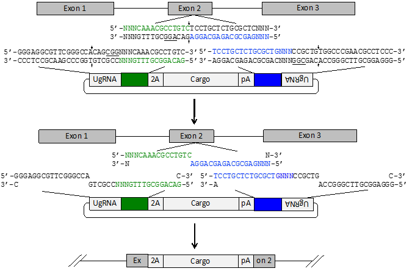

GTagHD (pGTagHomology Designer) is a tool for designing olionucleotides for use with the GeneWeld protocol. GeneWeld is a methodology for generating highly precise and efficent targeted integration. GeneWeld has been validated in zebrafish, pig fibroblast, and human cells.
GTagHD is designed to facilitate the use of the GeneWeld technology (https://doi.org/10.1101/431627), which offers several advantages over published approaches.
These advantages include:
GeneWeld requires much shorter regions of homology than other methods (e.g., some methods require several hundred base pairs in double-cut donors as an optimal homology arm length; GeneWeld requires only 48 bp).
GeneWeld generates precise knock-ins with much higher efficiency than published methods, including germline transmission rates of 50% in zebrafish.
GeneWeld appears to rely on homology-mediated end joining (HMEJ) , single-strand annealing (SSA), microhomology-mediated end joining (MMEJ), or another SSA/MMEJ-like pathway, rather than homology-directed repair (HDR), thus it does not require manipulation of cell cycle regulators to achieve enhanced efficiency.
To generate oligonucleotides for targeted integration, select "Submit Job."
For detailed instructions on how to use GTagHD, select "Instructions and FAQs."
If you would like to download the GTagHD code or GeneWeld plasmid maps, select "Downloads."
For information on the NIH R24 grant which supported the development of this tool, see "Funding."
For information on citing GeneWeld and GTagHD in your research, see "How to Cite."
If you experience bugs, wish to request features, or need other help, please fill out the form at "Report Bugs or Contact Us."
GeneWeld is a technology for easily and efficiently integrating plasmid cargos into a genomic target. We have developed two plasmid series for use with GeneWeld (pGTag and pPRISM), which have a variety of features and reporters. We also have several new plasmid series under active development.
GeneWeld plasmids are available at AddGene as they are developed.
GeneWeld Integration Strategy

GeneWeld Integration Strategy
GTagHD pulls surrounding sequence context from the targeted genomic integration site (green and blue sequence), and processes this information to generate ready-to-order oligonucleotides which can be cloned into a plasmid vector to flank the plasmid cargo of interest. When the plasmid and genomic locus are cleaved by nucleases, the homology between the cargo and the genomic locus allows a DNA repair mechanism to precisely and efficiently knock-in the cargo. While the exact mechanism of GeneWeld integration is currently unknown, we refer to the repair as "homology-mediated end joining" (HMEJ), as it is believed to be microhomology-mediated end joining (MMEJ), single-strand annealing (SSA), or an MMEJ/SSA-like pathway.
GTagHD, GeneWeld, and the pGTag and pPRISM plasmid series were created by the Iowa State/Mayo Clinic Alliance for Genome Engineering.
 Order GeneWeld Plasmids
Order GeneWeld Plasmids